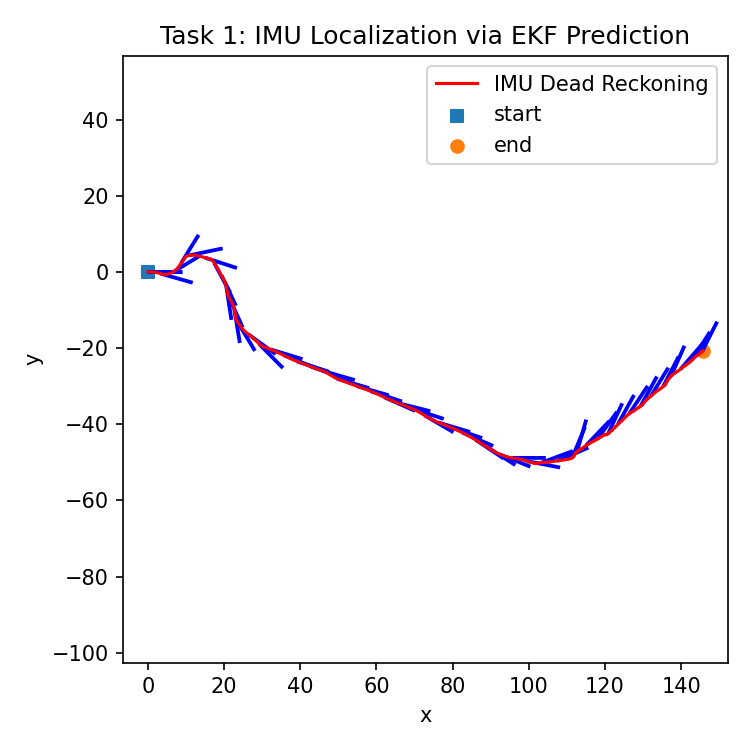
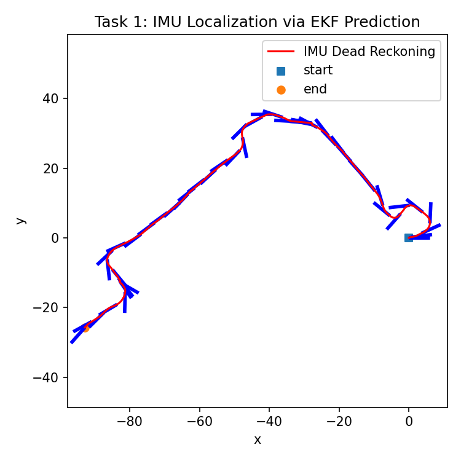
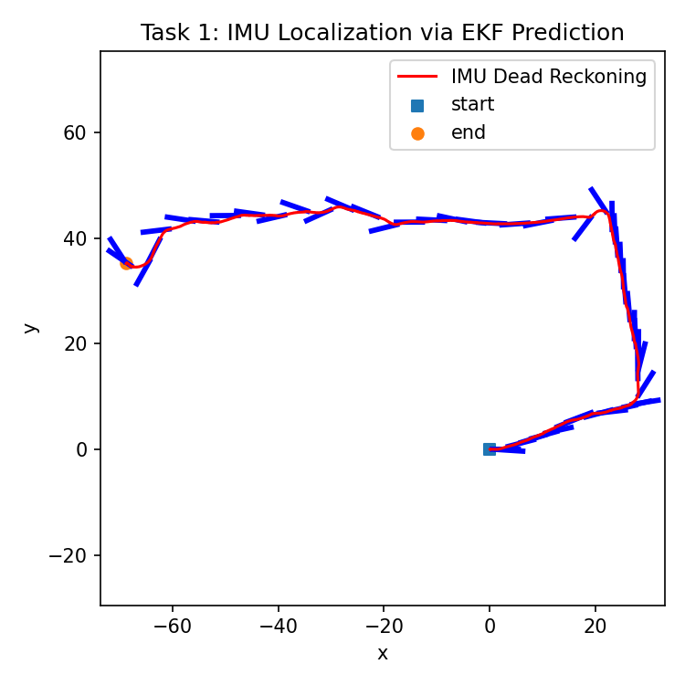
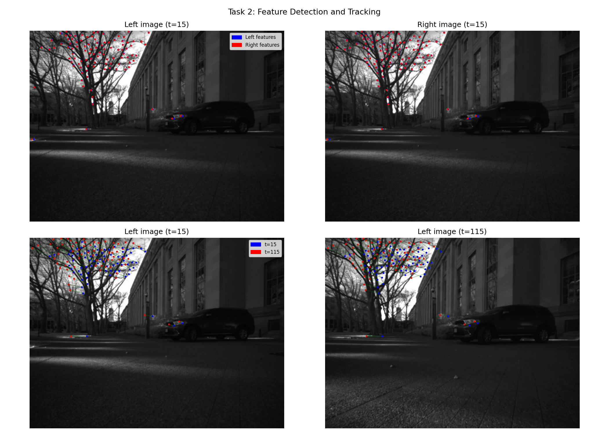
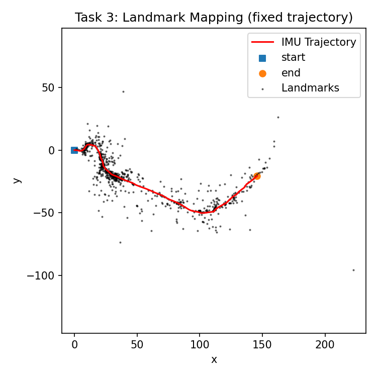
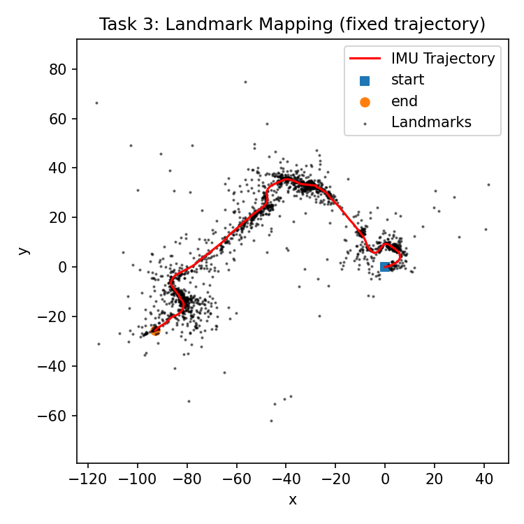
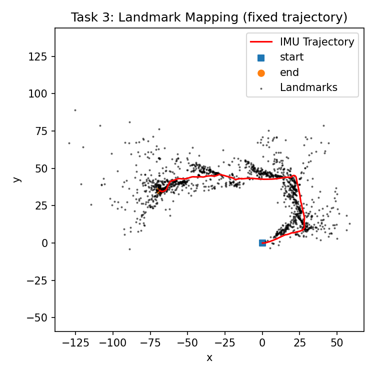
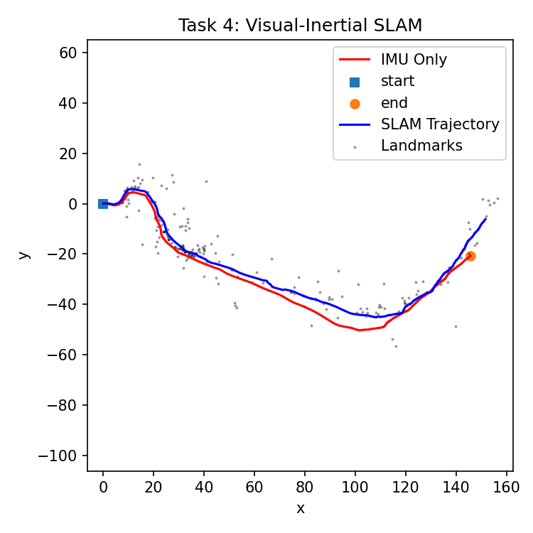
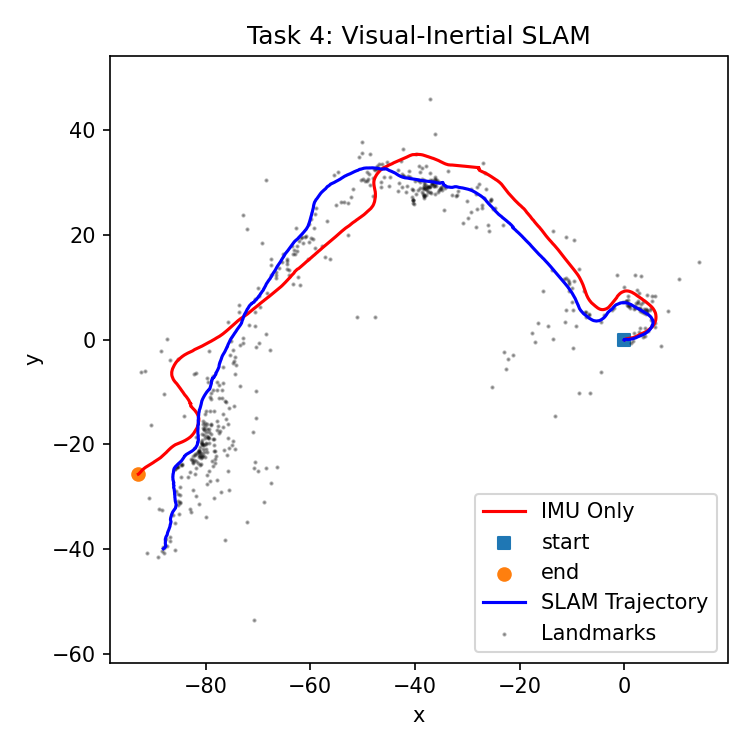
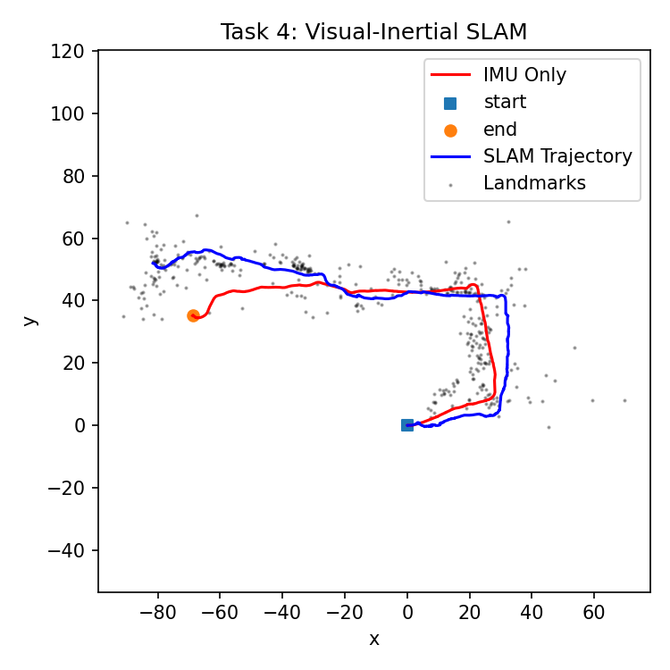

UC San Diego, ECE 276A: Sensing & Estimation in Robotics · Winter Quarter 2026
This project implements visual-inertial SLAM using an Extended Kalman Filter operating on the Lie group SE(3). The system fuses high-frequency IMU velocity measurements with stereo camera observations of point landmarks to jointly estimate the robot trajectory and a sparse 3D map. The pipeline is decomposed into four tasks: IMU dead reckoning, feature detection and tracking (extra credit), landmark mapping with a fixed trajectory, and full joint pose-landmark SLAM.
Data collected by Clearpath Jackal robots navigating MIT's campus, provided by Prof. Nikolay Atanasov as part of ECE 276A. Available at the course SharePoint.
The IMU pose is propagated using exact SE(3) kinematics with variable timesteps computed directly from UNIX timestamps. Covariance is propagated via the adjoint of the body-frame twist. Process noise was tuned down to σ2 = 10-6 from the TA-suggested 0.1, treating the IMU as near-perfect and reserving camera observations for small drift corrections only.

Dataset00: curved path (~150 m)

Dataset01: longer arc

Dataset02: L-shaped path
Dataset02 provides no pre-computed features, so a full stereo feature tracker was implemented from scratch. Shi-Tomasi corners are detected every 5 frames in the left image. Temporal tracks are maintained via Lucas-Kanade pyramidal optical flow. Stereo correspondences are found by running optical flow from left to right image, filtered by positive disparity and an epipolar constraint (|vL - vR| ≤ 2 px). A total of 19,559 unique feature tracks were computed across 6,393 timesteps.

Top: stereo matches at t=15 (blue = left camera, red = right camera). Bottom: temporal tracks from t=15 (blue) to t=115 (red).
With the IMU trajectory fixed from Task 1, landmark positions are estimated using per-landmark 3x3 EKF updates from stereo observations. Each landmark is initialized via stereo triangulation at its first valid observation. Three robustness filters were added beyond the lecture formulation: a minimum disparity gate (2 px) to avoid near-zero-depth instability, a maximum depth cap (50 m) to reject far noisy landmarks, and an innovation gate (50 px) to skip bad observations.

Dataset00: landmark map (black dots) along IMU trajectory (red)

Dataset01: landmark map along IMU trajectory

Dataset02: landmark map along IMU trajectory
The full VI-SLAM system combines the IMU prediction step with a joint pose-landmark EKF update. The joint covariance is stored as a SciPy sparse matrix. The Joseph stabilized covariance update replaces the standard (I - KH)Σ form, which is necessary for sustained numerical stability as state dimension grows. New landmarks are initialized on-the-fly from the corrected pose.
Two additional robustness filters were added for Task 4: a tighter innovation gate (20 px, vs 50 px in Task 3) since a bad observation now directly corrupts the pose via the cross-covariance block, and a pose correction gate that skips the entire update if ||δξ|| > 0.3 to guard against degenerate linearizations.
In both datasets the SLAM trajectory (blue) visibly corrects the IMU-only estimate (red). Dataset00 shows reduced y-bias; dataset01 shows a more compact arc consistent with the IMU overestimating curvature.

Dataset00: IMU-only (red) vs. SLAM-corrected (blue) with landmarks (gray)

Dataset01: SLAM correction pulls the arc inward relative to dead reckoning

Dataset02: SLAM trajectory follows the L-shape more precisely
| Parameter | Value | Task | Source |
|---|---|---|---|
| Process noise σ2 | 10-6 | 1, 4 | TA start, tuned |
| Obs. noise Task 3 (σ2V) | 4.0 px2 | 3 | TA start, tuned |
| Obs. noise Task 4 (σ2V) | 2.0 px2 | 4 | TA start, tuned |
| Min. disparity gate | 2.0 px | 3, 4 | Self-introduced |
| Max. depth gate | 50.0 m | 3, 4 | Self-introduced |
| Innovation gate Task 3 | 50.0 px | 3 | Self-introduced |
| Innovation gate Task 4 | 20.0 px | 4 | Self-introduced |
| Pose correction gate (γξ) | 0.3 | 4 | Self-introduced |